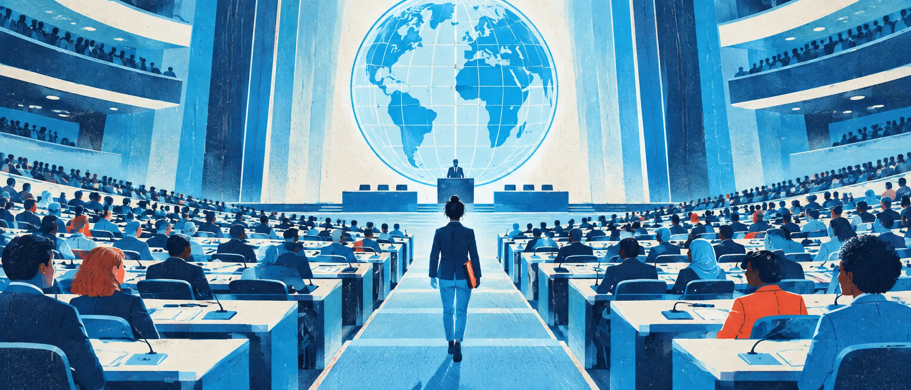

전형 일정
- 2차시서류 전형
기구 한 곳을 골라 조사하고 지원서를 씁니다. - 3차시현장 미션
파견된 곳에서 네 가지 위기를 판단하고 근거를 씁니다. - 마무리임명과 성찰
나의 판단 성향을 확인하고 성찰을 써서 제출합니다.
지원자 정보
쓴 내용은 이 기기의 이 브라우저에 자동 저장됩니다. 3차시에도 같은 기기, 같은 브라우저로 들어오세요.

국제연맹은 전쟁을 막지 못했습니다. 국제연합은 그 실패 위에 세워졌지만 거부권, 주권의 벽, 재정난 앞에서 지금도 흔들립니다. 이 일을 해 보겠다면 지원하세요.
쓴 내용은 이 기기의 이 브라우저에 자동 저장됩니다. 3차시에도 같은 기기, 같은 브라우저로 들어오세요.
한 곳을 고르면 공식 누리집 링크가 나옵니다. 10분 동안 둘러보며 설립 목적, 하는 일, 최근 활동을 찾으세요.
문항마다 글자 수 기준이 있습니다. 기준을 넘으면 초록색으로 바뀝니다.
한 가지 이상은 실제 국제 분쟁이나 국제 문제 사례와 연결하세요. 이 활동들은 3차시 미션에 다시 등장합니다.
지원서 전체를 복사해 선생님이 알려 준 곳에 제출하세요. 3차시에는 이 기구의 직원으로 현장에 파견됩니다.
당신은 의 신입 직원입니다. 네 가지 위기가 차례로 찾아옵니다. 정답은 없습니다. 선택지를 고르고, 왜 그 선택이 다른 선택보다 나은지 근거를 쓰면 다음 미션이 열립니다.
지원서, 미션 판단과 근거, 성찰이 모두 들어 있습니다. 전체를 복사해 선생님이 알려 준 곳에 붙여 넣으면 끝입니다.
Zoom 실시간 수업, 개인 활동입니다. 교사가 할 일은 링크를 채팅에 올리고, 시간을 알려 주고, 제출물을 받는 것뿐입니다.
① 구글 시트에 기록 저장소(Apps Script)를 한 번 설치하고, 웹 앱 주소를 config.js의 API_URL에 넣습니다. 방법은 저장소 README의 「학생 기록 모으기」에 있습니다.
② 그러면 학생이 쓰는 내용이 몇 초마다 선생님 시트에 자동 저장됩니다. 학생은 학번, 이름, PIN 4자리로 다른 기기에서도 이어서 할 수 있습니다.
③ 수업 중에는 교사용 기록 보기에서 교사 비밀번호로 반 전체 진행 상황과 글을 봅니다. 구글 시트에서 바로 봐도 됩니다.
학생이 PIN을 잊었다면 구글 시트에서 그 학생 줄의 ‘PIN 확인값’ 칸을 지우세요. 학생이 새 PIN으로 다시 들어오면 기존 기록을 이어서 불러옵니다.
| 0~5분 | 화면 공유로 표지를 보여 주고 채팅에 링크를 올립니다. 학생은 학번과 이름을 넣고 시작합니다. |
|---|---|
| 5~15분 | 기구 선택과 공식 누리집 조사. 채팅에 “학번 이름 / 기구”를 올리게 하면 출석 확인이 함께 됩니다. |
| 15~45분 | 지원서 작성(자동 저장). 25분, 40분쯤 “3번까지 쓴 사람 반응 달기”로 진행을 확인합니다. |
| 45~50분 | 지원서 접수, 복사, 제출. 다음 시간에도 같은 기기와 브라우저로 들어오라고 안내합니다. |
| 0~5분 | 현장 미션 화면을 공유해 방식을 1분 안내합니다. “정답은 없고, 근거가 점수입니다.” |
|---|---|
| 5~37분 | 미션 네 개를 개인별로 해결합니다(한 미션에 약 8분). 8분마다 채팅으로 “지금쯤 미션 ○”를 알립니다. |
| 37~47분 | 임명장 확인, 성찰 두 문항 작성. 원하는 학생 두세 명에게 임명 유형과 가장 어려웠던 판단을 마이크로 듣습니다. |
| 47~50분 | 최종 제출물 만들기, 복사, 제출. |
기록 저장소를 설치했다면 기기를 바꿔도 학번, 이름, PIN으로 이어서 할 수 있습니다. 설치하지 않았다면 같은 기기와 브라우저로 들어와야 합니다.
채점이 필요하면 세 가지만 상, 중, 하로 봅니다.
① 기구의 실제 역할을 정확히 조사하고 활동을 실제 사례와 연결했는가
② 미션 판단 근거에서 포기한 선택지와 비교하며 논리를 세웠는가
③ 성찰에서 국제연맹의 실패와 국제연합의 한계를 자신이 지원한 기구와 연결했는가
미션 선택지와 게이지 점수는 학생의 판단 성향을 보여 줄 뿐 채점 대상이 아닙니다.